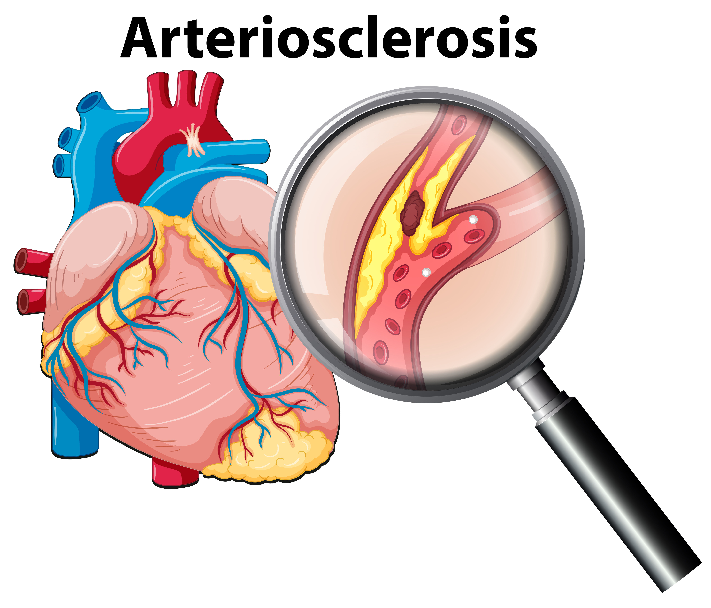

Coronary Artery Disease
CAD is a condition where vessels supplying blood to the heart become narrowed. This is commonly caused by unhealthy dieting and smoking. The World Health Organization (WHO) estimates that CAD has claimed about 7.4 million lives in 2012. That contributes to about 12.8% of all deaths globally. Preventative care is the best care. Eating a moderately healthy diet with fruits and vegetables and making time to exercise are usually suggested habits to help prevent disease, as well as getting regular check-ups from your care provider.
